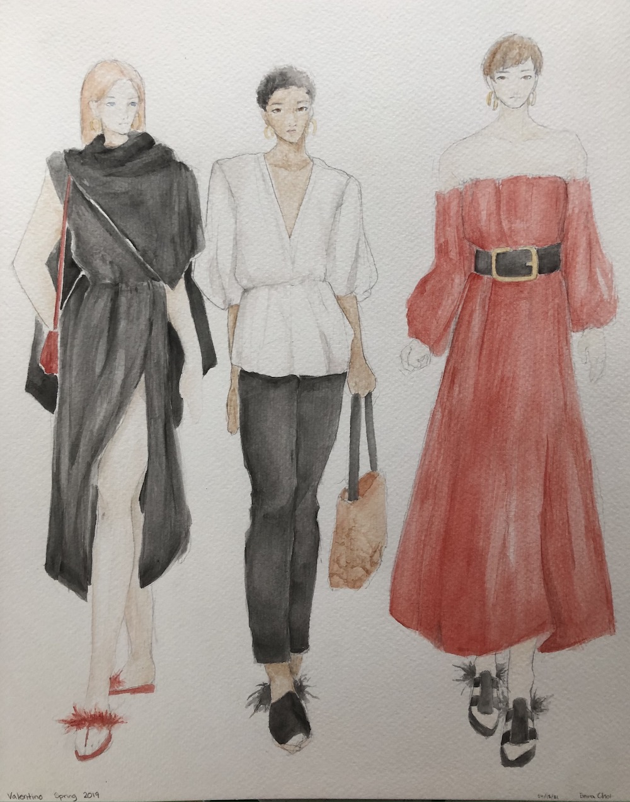

fashion inspiration
This was one of the first projects of a fashion drawing class I took. The objective was to find a fashion line and create outfits that would go along with it. For this project, I chose Valentino Spring 2019, a show we had watched earlier in class. The designer of the line, Pierpaolo Piccioli, was "thinking of paradises," and "artists' colonies of the past." The line had a variety of looks, but I focused on the styles felt in the first/last few looks. These had mostly simple colors (white/black/red), with a rather loose/flowy silhouette. Throughout, the footwear mostly consisted of feathered sandals, and the earrings throughout were all the c-shaped golden ones I depicted. I did enjoy the simple elegance of some of the outfits and that was my main inspiration.
Working with watercolor is not unfamiliar to me, but throughout my experience I think one of the main things I look to work on is building stronger colors. Typically my watercolor work may look a bit washed out; in this project I think I appreciate how the black fabrics turned out, but the color on the figures (skin, hair) could use some improvement.
Watercolor, pencil; April 2021